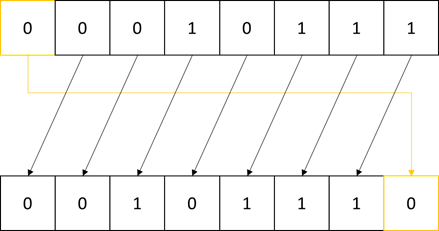
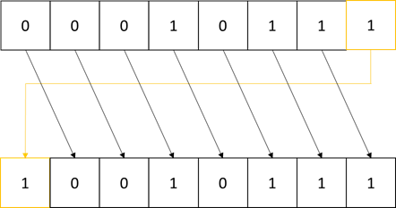
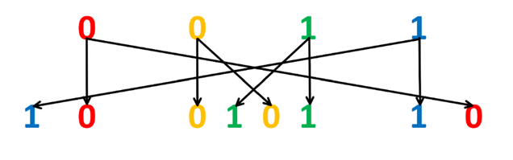
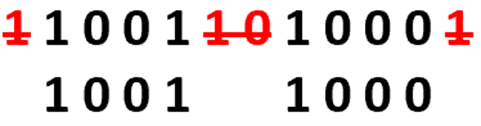
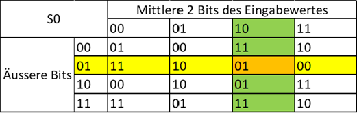

Grundlagen und Begriffe zum Verständnis der Verschlüsselung
Auf dieser Webseite geht es darum, das nötige Grundwissen an Fachbegriffen zu erlangen, das vorausgesetzt wird, um die Chiffrierungsprozesse von Simple-DES und Trösch’s Verschlüsselungstechnik zu verstehen.
Begriffserklärung Fachbegriffe
Chiffrierung = Verschlüsselung ➜ chiffrieren (Verb) = verschlüsseln
Klartext = unverschlüsselte Nachricht in Binärcode
Chiffretext = verschlüsselte Nachricht in Binärcode
Permutation = Vertauschung von Bits nach bestimmten Vorgaben
Codieren = in Binärzahlen umwandeln
Invers = umgekehrt
1 Bit = 1 Ziffer eines Binärcodes
1 Byte = 8 Bits
Umwandlung von Text in Binärzahlen (ASCII-Code)
Damit der Computer mit Buchstaben, Zeichen und Zahlen natürlicher Sprachen arbeiten kann, müssen diese zuerst codiert werden. Dies geschieht mit ganz bestimmten Tabellen. Für diese Arbeit wird ASCII als Codierung verwendet. Diese wandelt Zahlen, Eingaben oder Buchstaben in einen für den Computer lesbaren 8-Bit-Binär-code um. Wobei die eigentliche ASCII-Codierung nur 7 Bits ausgibt und das achte Bit das Paritätsbit darstellt. (Paritätsbit: Bei einer ungeraden Anzahl Einsen in der 7-Bit-Binärzahlenkette wird eine Eins als Paritätsbit an-gehängt, ansonsten eine 0) Da das Paritätsbit allerdings keine Relevanz hat in dieser Arbeit, wird nicht näher darauf eingegangen und einfach immer von einem 8-Bit-Binärcode ausgegangen. Die ASCII-Codierung umfasst 128 Zeichen, davon 33 Steuerzeichen und 95 druckbare Zeichen. Diese Codierung bietet heute die Grundlage für Erweiterungen, wo mit mehr Bits auch mehr Zeichen abgebildet werden können.
Die Charaktere 0 -31 im Binärcode sind nicht druckbare Steuerungscodes und werden beispielsweise dafür benutzt, um Drucker zu steuern.
| Dezimalzahl | 8-Bit-Binärcode | Symbol |
Bedeutung |
|---|---|---|---|
| 0 | 00000000 | NUL | null char = dt. Null-Zeichen |
| 1 | 00000001 | SOH | start of heading = dt. Beginn eines Titels |
| 2 | 00000010 | STX | start of text = dt. Beginn eines Texts |
| 10 | 00001010 | LF | Line Feed = dt. Zeilenvorschub |
Die Charaktere 32 -127 im Binärcode sind druckbare Zeichen, wie Buchstaben, Ziffern oder Textzeichen.
| Dezimalzahl | 8-Bit-Binärcode | Symbol/ Buchstabe |
Bedeutung |
|---|---|---|---|
| 32 | 00100000 | Leerzeichen | |
| 33 | 00100001 | ! | Ausrufezeichen |
| 48 | 00110010 | 0 | Null |
| 50 | 00110010 | 2 | Zwei |
| 58 | 00111010 |
: | Doppelpunkt |
| 65 | 01000001 | A | Grossgeschriebenes A |
| 66 | 010000010 | B | Grossgeschriebenes B |
| 97 | 01100010 | a | Kleingeschriebenes a |
| 98 | 01100001 |
b | Kleingeschriebenes b |
Permutation
Bei einer Permutation werden die Bits (0 und 1 bei Binärzahlen) nach bestimmten Vorgaben vertauscht. Diese Vorgaben werden jeweils in Ziffern angegeben.
Bei einer Permutation von 4 Bits wird z.B. 2,4,3,1 als Neuordnung nach der Permutation angegeben.
Dies ist folgendermassen zu verstehen:
| Art | Eingabe |
Ausgabe |
|---|---|---|
| Nummerierung der Zahlenfelder |
1234 | 2431 |
| Bits | 0101 | 1100 |
Zyklischer Links-/ Rechts-Shift
Bei Simple-DES und auch bei Trösch’s Verschlüsselungstechnik gibt es eine bitweise Rotation des Binärcodes bei der Schlüsselgenerierung. Das bedeutet, einzelne Bits werden innerhalb der Binärzahlenkette verschoben. Dazu wird ein zyklischer Links-Shift verwendet. Zur Vervollständigung wird hier auch ein zyklischer Rechts-Shift erklärt.
Beim Zyklischen Links-/ Rechts-Shift handelt es sich um eine Verschiebung der Bits um eine bestimmte Anzahl Positionen nach links oder nach rechts. Beim zyklischen 1-Bit-Links-Shift werden beispielsweise alle Bits um eine Position nach links verschoben und das hinausgeschobene vorderste Bit wird ganz rechts wieder angehängt. Bei einem zyklischen Rechts-Shift um eine bestimmte Anzahl an Bits passiert dasselbe, einfach in die andere Richtung, d.h. alle Bits werden nach rechts verschoben und die hinausgeschobenen Bits werden links wieder angehängt.
 Expansion von Binärzahlen
Bei Simple-DES und auch bei Trösch’s Verschlüsselungstechnik gibt es während des Chiffrierungsprozesses eine Expansion von 4 auf 8 Bits. Daher wird dieser Prozess hier genauer erläutert.
Bei der Expansion handelt es sich um eine Erweiterung der Binärzahlen. Die Bits werden verdoppelt und an bestimmte Positionen gebracht, gemäss folgendem Schema:
Bei der Schlüsselgenerierung von Trösch’s Verschlüsselungstechnik gibt es noch die umgekehrte Expansion. Dies ist eigentlich eine Kompression. Hier werden einfach die äusseren beiden Bits und die beiden Bits in der Mitte weggelassen. Hierzu folgendes Beispiel:
XOR-Verrechnung
Bei Simple-DES und auch bei Trösch’s Verschlüsselungstechnik gibt es eine bitweise Veränderung des Binärcodes. Das bedeutet, die Bits werden einzeln chiffriert. Dazu wird unter anderem auch XOR verwendet.
Ein Exklusiv-Oder-Gatter, auch XOR-Gatter, ist ein Gatter mit zwei Eingaben und einer Ausgabe. Wenn von zwei Bits, die vergleicht werden, genau eines davon eine 1 ist, ist die Ausgabe auch eine 1, ansonsten ist sie 0.
| Eingabe 1 | 0 | 1 | 0 | 1 |
|---|---|---|---|---|
| Eingabe 2 | 1 | 0 | 0 | 1 |
| Ausgabe (nach XOR-Verrechnung) | 1 | 1 | 0 | 0 |
Substitution (Prinzip der S-Boxen)
Bei der bitweisen Veränderung des Binärcodes bei Simple-DES und bei Trösch’s Verschlüsselungstechnik wird unter anderem auch die Substitution per Substitutionsboxen (S-Boxen) verwendet.
Die Substitution wird nun anhand eines Beispiels mit der S-Box 0 von Simple-DES erklärt. Zur Chiffrierung werden zunächst die äusseren beiden Bits und die inneren beiden Bits voneinander getrennt. Aus 0101 wird dementsprechend 01 und 10. Die äusseren beiden Bits (01) nun mit der entsprechenden Zeile verglichen und die inneren Bits (10) werden mit der entsprechenden Spalte verglichen. Die Zeilen und Spalten treffen sich beim Feld 01. Das bedeutet, dass 0101 durch 01 substituiert wird. Dieser Prozess wird in der nachfolgenden Tabelle auch noch grafisch illustriert.
Grundlagen und Begriffe zum Verständnis des Codes dieser Website
Um den Code und die Erklärungen dazu zu verstehen unter Infos zur Website bedarf es ein Grundwissen an Fachbegriffen und Programmier-Befehlen.
Dieses Grundlagenverständnis kann hier erworben werden:
Begriffserklärung Fachbegriffe
Website = gesamte Website bestehend aus verschiedenen Unterseiten, den Webseiten oder Webpages
Webseite = Webpage = einzelne durch scrollen erreichbare Seite der Website
Tag = Zeichen, Begriff oder Befehl einer Programmiersprache
Variable = Bezeichner, der für verschiedene Grössen stehen kann
HTML
HTML wird dazu verwendet, um eine Website zu kreieren, indem damit Bilder und Text in Rohform auf Websites dargestellt werden.
HTML steht für „Hyper Text Markup Language“. Dies ist Englisch und bedeutet „Hypertext-Auszeichnungssprache“.
Hypertext ist ein dynamischer Text mit Querverweisen zu entfernten Textpassagen, anderen Texten oder Bildern.
Eine Auszeichnungssprache ist eine für Maschinen lesbare Sprache, die für die Gliederung und Formatierung von Texten, Bildern oder anderen Daten zuständig ist.
JavaScript
JavaScript ist eine Skriptsprache hauptsächlich für Websites. Sie wird dazu verwendet diese interaktiv erlebbar zu machen, in dem in JavaScript Funktionen für die Webseiten geschrieben werden.
Eine Skriptsprache ist eine Programmiersprache, die anderen Programmiersprachen Anweisungen geben kann. Sie wird also nicht ausgeführt, sondern interpretiert und läuft nur in einer bestimmten Umgebung. Bei JavaScript ist diese Umgebung der Webbrowser.
CSS
CSS ist eine von HTML unabhängige Programmiersprache, mit der das Design der Webinhalte erstellt wird. Die Darstellungsweise wird beispielsweise durch Attribute wie Schriftart, Grösse oder Farbe festgelegt.
Array
Ein Array ist wie eine Tabelle, die mit Daten gefüllt werden kann, entweder mit Buchstaben, Text oder Zahlen. In der Programmierung beginnt die Nummerierung immer bei 0. Das erste Feld ist beim Aufrufen also das Feld 0.
Hier ein Beispiel für ein eindimensionales Array:
| 0 | 1 | 2 | 3 | 4 | 5 | ... |
|---|
... und noch ein Beispiel für ein zweidimensionales Array:
| 00 | 01 | 02 | 03 | 04 | 05 | ... |
|---|---|---|---|---|---|---|
| 10 | 11 | 12 | 13 | 14 | 15 | ... |
| 20 | 21 | 22 | 23 | 24 | 25 | ... |
| ... | ... | ... | ... | ... | ... | ... |
In JavaScript sehen diese Arrays wie folgt aus:
let oneDimensionArray = [1,2,3,4,5]
let twoDimensionArray = [["00","01","02","03","04","05"],["00","01","02","03","04","05"], ["00","01","02","03","04","05"]]console.log(oneDimensionArray[0])
console.log(twoDimensionArray[0][0])Beim Wiedergeben des ersten Objekts des Arrays in der Konsole wird beim eindimensionalen Array die Zahl 0 ausgegeben und beim zweidimensionalen Array der „Text“ 00.
For-Schleife
Eine for-Schleife ist ein Wiederholungsvorgang, der von einer Variable und einer gewählten Grösse abhängt. Die Variable (i) beginnt meist bei 0 und ist aufsteigend mit Einerschritten (i++). Sie kann allerdings auch bei 1 beginnen und mit grösseren Schritten auf oder sogar absteigen. Der Vorgang innerhalb der for-Schleife wird so lange wiederholt bis die Variable das angegebene Verhältnis, meist kleiner als (<), zur gewählten Grösse erhält. Die Standardform (Variable beginnt bei 0 und erhöht sich immer um 1) sieht in JavaScript wie folgt aus:
let sum = 0
for (let i = 0; i < 5; i++) {
sum += 10
}
console.log(sum)In der Konsole wird nun die Zahl 50 ausgegeben, da zur Variable sum fünfmal die Zahl 10 dazu addiert wurde und sum am Anfang 0 ist.
If/ Else if/ Else
Mit if wird eine Bedingung aufgestellt. Nur falls diese Bedingung erfüllt ist, wird der Programmiercode innerhalb der geschwungenen Klammern ({}) ausgeführt. Else if ist eine zusätzliche Bedingung, welche angeschaut wird, falls die vorherige Bedingung nicht zutrifft. Der Code bei else wird ausgeführt, falls alle vorangegangenen Bedingungen mit if nicht zutreffen.
So sieht der zugehörige Code mit Beispielgrössen in JavaScript aus:
let number = 6
if (number < 10) {
console.log("Tiny")
} else if (number < 20) {
console.log("Small")
} else if (number < 50) {
console.log("Medium")
} else if (number < 100) {
console.log("Large") }
else { console.log("Huge")
}Die Ausgabe in der Konsole beim obigen Code ist «Tiny», da number = 6 und 6 kleiner ist als 10.